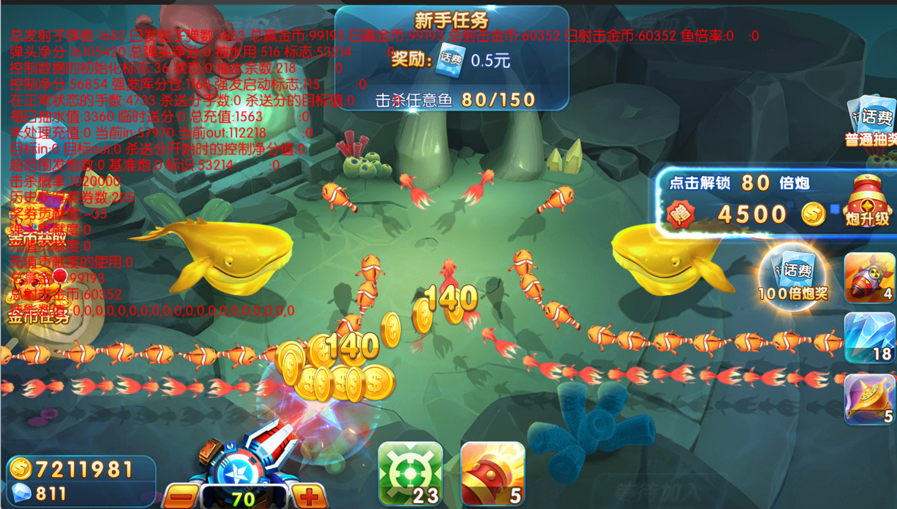
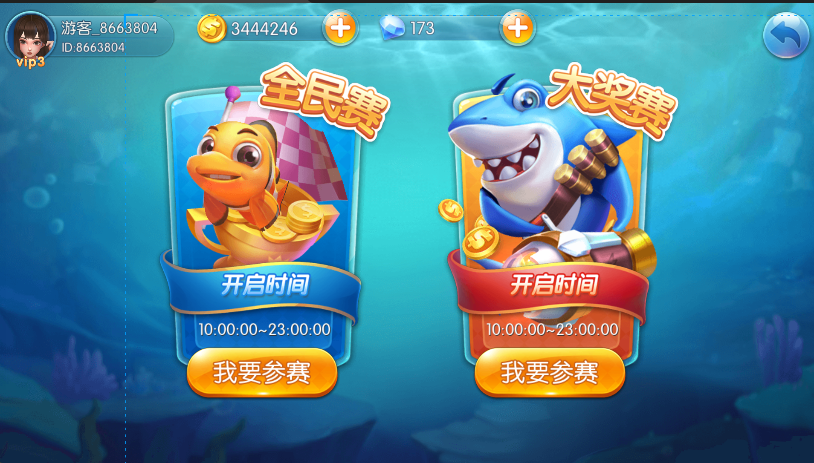

捕鱼源码
OceanRaid 捕鱼游戏项目包含 Cocos/Lua 客户端模块、Python/C++ 实时服务、Node.js 运营后台、数据库与测试基础框架。
技术与公开范围
- Cocos 客户端模块与 Lua 代码
- Python 业务服务和 C++ 实时房间服务
- Node.js 运营后台、配置、日志和数据管理
- 当前公开客户端不是可在干净环境独立重建的完整发行包
真实产品截图



OceanRaid 捕鱼游戏项目包含 Cocos/Lua 客户端模块、Python/C++ 实时服务、Node.js 运营后台、数据库与测试基础框架。

